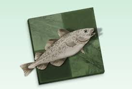
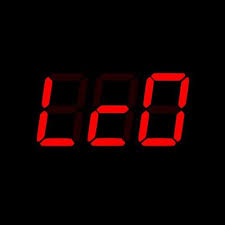

Všechny šachové enginy hrají se stejným hardwarem a mají stejnou databázi zahajení. Ten nejlepší dostane šachového jezdce Shanny.
| Sezóna | výherce | Sezóna | výherce |
|---|---|---|---|
| 1 | Houdini | 2 | Houdini |
| 3 | Houdini | 4 | Houdini |
| 5 | Komodo | 6 | Stockfish |
| 7 | Komodo | 8 | Komodo |
| 9 | Stockfish | 10 | Houdini |
| 11 | Stockfish | 12 | Stockfish |
| 13 | Stockfish | 14 | Stockfish |
| 15 | LCZero | 16 | Stockfish |
| 17 | LCZero | 18 | probíhá zde |
Opensource motor inspirovaný Glaurungem (taky opensource). První verze vyšla v roce 2008. Je naprogramován v jazyce C++. Dostupný jak pro počítač, tak i pro mobil. Slangově se mu říká Treska (což je překlad) nebo také Ryba. Umí hrát i Fisherovy šachy. Je trénován Fishtestem, který běží na procesorech dobrovolníků a bylo využito více než 2600let CPU času, díky čemuž stockfish zesílil o 120 Elo bodů.
Zkráceně LCZero nebo LC0. Vychází z Alphy Zero a rovněž používá neuronové sítě. Projek začal v roce 2018, získala 2 tituly TCEC a podílí se na něm i zakladatel Fishtestu Gary Linscott.